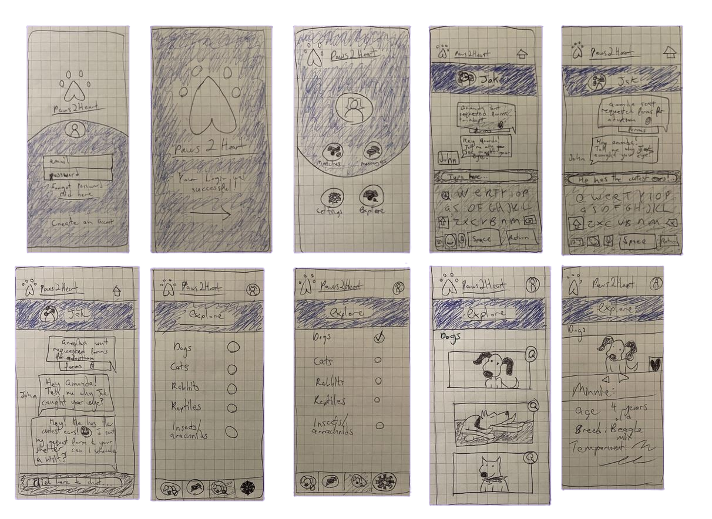

1. User Research
THE PROBLEM
The current adoption process is confusing, can have miscommunication problems between the shelter and adopter, and can be time-consuming, resulting in potential adopters pulling away.
THE SOLUTION
To make a pet rescue/adoption service that is designed to create a streamlined process for both finding local animals to adopt, and the adoption process itself; all in hopes of facilitating and encouraging more adoptions.
TOOLS
Figma, Trello, Invision, Photoshop, Illustrator, Zoom
OUR ROLES
UX Researchers, UI designers

Affinity Diagram

User Journey Map

2. Definition & Ideation
User Insight Statement
People wanting to rescue pets need a streamlined process for searching and finding local animals that meet their needs. The current adoption process is confusing and rife with miscommunication, leading to otherwise good connections between animals and families being overlooked and adoptees pulling away.
Problem Statement
Our pet rescue adoption service was designed to make a streamlined process for searching and finding local animals to adopt. We have observed that our service isn’t allowing adopters to easily find pets that meet their needs, which is causing adopters to pull away from adopting and for animals to be overlooked. How might we improve our service so that our customers are successful based on an increase in rescue adoptions, as well as animals and adopters finding their permanent companionship?
I Like, I Wish, What If...
Based off our user insight and problem statement, my team and I got creative and started thinking about what we wanted regarding a pet adoption app. This would later help us prioritize our features for the app so that we could better develop it to user needs.


3. Prototyping
Tasks: login, Save a match, & Request more information
Below are hand-drawn lofi prototypes I developed. The idea of the app was to take the user experience of dating apps and merge that with the visual design of a dog adoption site.
4. Testing & Iterating
User Lofi Prototype Testing Notes - 2x2 Matrix
After gaining feedback on the lofi prototypes our team began to dissect user feedback and apply it to our prototyping matrix.

High Fidelity wireframes
The final product is inspired by apps such as OKCupid and dog adoption sites such as PetFinder, we made something that felt fun and characterized the excitement of pet ownership.